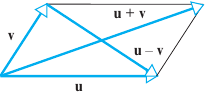

Inner Product
Definition P.1 Let V be a vector space over the field of real or complex numbers. An inner product on V is a mapping (·,·) : V × V → ℂ into the underlying field (complex in general); that is, with every pair of elements x and y there is associated a scalar which is written ( x, y ) and is called inner product (or scalar product) of x and y, such that for all elements x, y and z ∈ V and a scalar α ∈ ℂ we have :
Linearity:
(αx , y, ) = α (x , y )
( x + y, z ) = (x , z ) + ( y, z )
Conjugate symmetry: (x, y) = (y, x)*
Positive-definite: (x, x) > 0, e (x,x) se e solo se x = 0
Dove nella (2) il simbolo * indica il complesso coniugato. Sempre dalla (2) risulta che il prodotto interno è non commutativo, so we must be careful to specify which vector goes into the first slot and which goes into the second. The Dirac bra-ket notation always keeps this clear: the vector in the bra <v| goes into the first slot and the vector in the ket |v> into the second.
Conjugate symmetry and linearity in the first variable gives
so an inner product is a sesquilinear form, in the sense that the second argument is conjugate linear. The term sesqui comes form the Latin for one and a half.
La (1) significa che, per ogni y in V fissato, la funzione (x,y) è lineare.
La (2) si esprime dicendo che la funzione ( , ) è hermitiana.
Vector spaces endowed with an inner product are called inner product spaces o spazio pre-Hilbertiano, in cui si distinguono gli spazi euclidei, reali. In uno spazio vettoriale dotato di prodotto interno due vettori si dicono ortogonali se
(x, y) = 0
Esempi
Real numbers- A simple example is the real numbers with the standard multiplication as the inner product
(x, y) := xy
Euclidean space - More generally, the real n-space ℝn with the dot product is an inner product space, an example of a Euclidean n-space.
where xT is the transpose of x.
Nello s.v. ℂn possiamo introdurre il prodotto scalare:
dove il contrassegno indica il complesso coniugato. Dove si intende x = (x1, x2, ... xn), y = (y1, y2, ... yn)
Norma Indotta
In ogni spazio vettoriale prehilbertiano è definita in modo naturale una norma, indotta o generata dal prodotto scalare stesso espressa da
(1.7)
ben definita grazie alla proprietà (3) del prodotto scalare. Le norme indotte da un prodotto scalare vengonoe dette anche norme hilbertiante, da David Hilbert (1870 - 1943).
Teorema 1 (Cauchy–Schwarz inequality) Per ogni coppia di vettori x,y ∈ V si ha
|(x, y)| ≤ ||x|| ||y||
The equality occurs if and only if (x, y) is a linearly dependent set.
Dimostrazione 1- Se y = 0, la relazione è banalmente dimostrata dato che (x,0) = 0. Sia y ≠0 , utilizzando le proprietà del prodotto interno ponento t ∈ ℝ, ed ogni x, y ∈ X
0 ≤ (tx + y, tx + y) = t2 ||x||2 + 2t (x, y) + ||y||2 ≡ P(t).
Questa è un'equazione di secondo grado in t, sempre positiva. Pertanto deve avere discriminante non positivio ossia
(x,y)2 - ||x|2 ||y|2 ≤ 0
Che equivale alla disuguaglianza di Schwarz. L'uguaglianza si ha solo se tx + y = 0 ossia se x e y sono dipendenti.
Dimostrazione 2 - Supponendo che x e y non siano nulli si ha per ogni α ∈ ℂ.
Scegliamo α in modo da annullare la somma dei primi due addenti nell'ultima equazione
Sostituendo nell'ultima espressione, si ha
da cui la tesi, estraendo le radici quadrate. □
Dimostrazione della disuguaglianza triangolare - Vale la seguente
elevando entrambi i membri al quadrato, occore verificare che
Dato che
si è sfruttato il fatto che la somma di un numero complesso e il suo coiugato è uguale a due volte la parte reale dello stesso numero. Per ogni numero complesso si ha in aggiunta
Re z ≤ |Re z| ≤ |z|
Possiamo quindi scrivere
dove nel penultimo passaggio si è sfruttata la disuguaglianza di Schwarz.
ed è così dimostrato che la funzione in (1.7) è una norma.
Per le norme indotte da un prodotto scalare vale un'ulteriore identità nota come identità del parallelogramma
Teorema 3 (Identità del Parallelogramma) Per ogni coppia di vettori x,y ∈ V si ha
Dimostrazione. Notanto che
||x + y||2 = ||x||2 + 2(x,y) + ||y||2
e che
||x - y||2 = ||x||2 - 2(x,y) + ||y||2
Sommando queste due identità si ha la tesi.□
Se si interpreta ||x|| come la lunghezza del vettore x, la legge del parallelogramma generalizza un risultato della geometria Euclidea elementare, conseguenza del teorema di Pitagora: la somma dei quadrati delle lunghezze delle diagonali di un parallelogramma uguaglia la somma dei quadrati della lunghezza dei suoi lati.
Gli s.v. con prodotto scalare avente dimensione finita, vengono chiamati spazi euclidei.
Definizione P.2 - Uno spazio prehilbertiano completo rispetto alla norma indotta dal prodotto scalare si dice spazio di Hilbert.